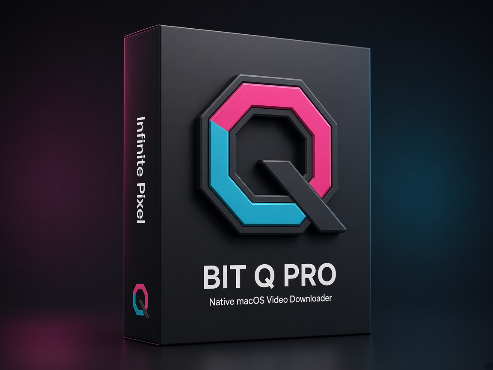
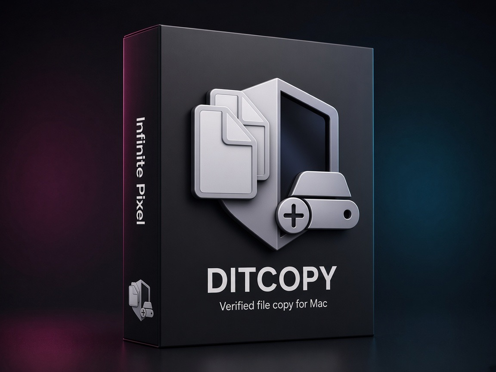
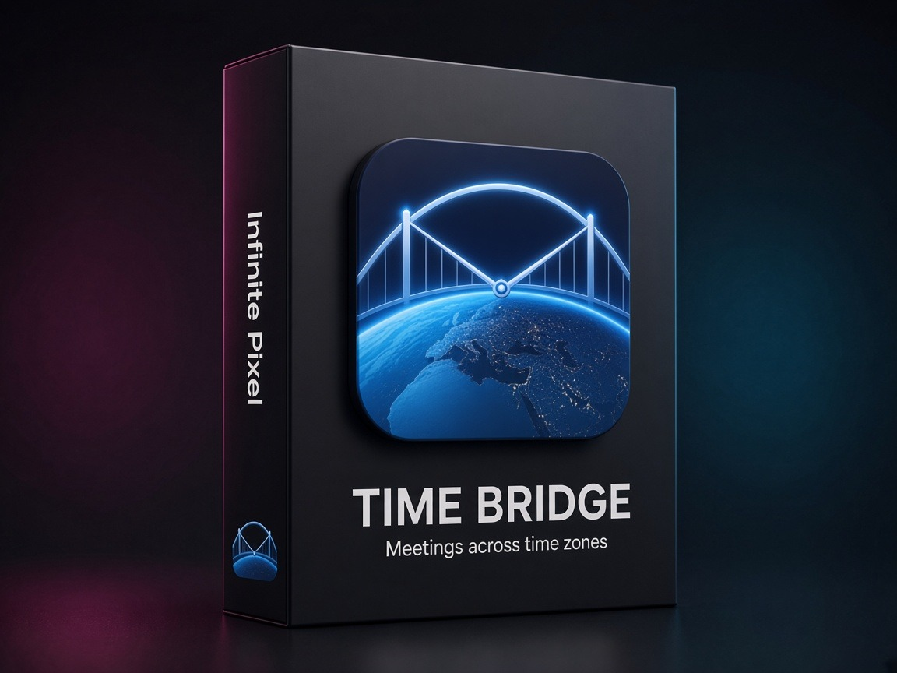

Bit Q Pro
Paste a link. Save the file when the download finishes.
$19 one-time
macOS · Gumroad
A native Mac video downloader for YouTube, TikTok, Vimeo, Twitch, and many more sites.
Built in Swift for Apple Silicon and Intel — private, notarized, and free of ads or trackers.
- YouTube, TikTok, Vimeo, Twitch & many more
- Up to 6 downloads at once with smart queue
- Full playlist downloads with live progress
- Format & quality control — 4K when available
- Apple-notarized. No ads. No tracking.

DitCopy
Offload the card. Prove it copied.
$14.99 one-time
macOS · App Store
Professional file copy for DITs, photographers, and videographers.
Up to four destinations, live speed, and checksums so you leave set knowing the footage is safe.
- Copy to up to four drives at once
- MD5 or byte-for-byte verify
- Pull media from iPhone over USB
- Live speed graph while you copy
- PDF reports for client handoffs

Time Bridge
Find a time that is fair for everyone.
Free · Pro $6.99
iPhone · App Store
Plan meetings across time zones on iPhone. Convert a time you already know,
or let Suggest Best Times rank a kinder slot for the whole group.
- Plan a Meeting — everyone’s local time at a glance
- Suggest Best Times ranked by comfort and fairness
- Templates for groups you meet with often
- Time Converter with scrub timeline and haptics
- Lock Screen Live Activities with Pro